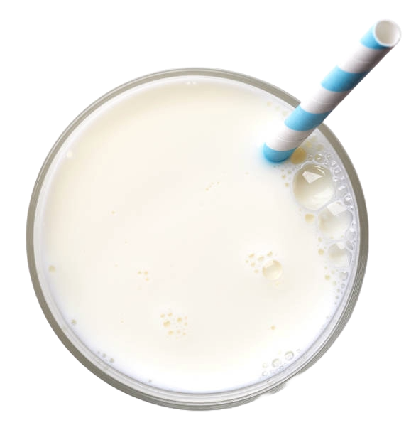
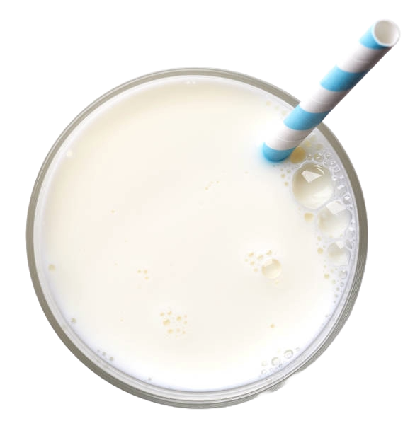

Should You Eat These Foods If You're Prediabetic?
By Owen Yang, Berlen Zhang, Sohan Raval, Christian Guerra
You’ve likely heard that too much sugar and processed food can lead to diabetes, but
what does that really mean? According to the Cleveland Clinic, diabetes occurs when blood sugar (glucose)
levels are too high, increasing the risk of complications like heart disease, nerve damage, and kidney failure.
But it doesn’t happen overnight. Prediabetes is an early warning sign, offering a crucial chance to turn things around.
The good news? The right foods can play a powerful role in preventing diabetes and restoring healthy blood sugar
levels before it’s too late. Let's see what these right foods actually are. (For best functionality, please switch your browser to Google Chrome!)
Let's Begin
↓


 
